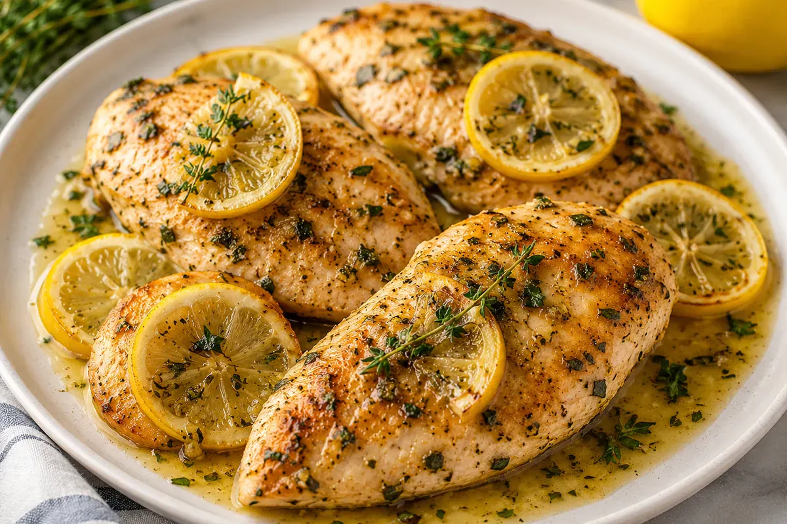

Lemon Herb Roasted Chicken

Illustrative image.
This is the sort of chicken that goes into the oven on a Tuesday and comes out tasting like a Sunday. Olive oil, lemon juice and zest, crushed garlic, rosemary and oregano make a loose marinade that flavours the meat and browns into a sticky glaze in the pan.
The recipe works with boneless thighs or breasts and takes about forty minutes total. Four servings, with a pan of juices worth spooning over rice or potatoes.
Ingredients
- 4 boneless chicken thighs or breasts
- 3 tbsp olive oil
- Juice and zest of 1 large lemon
- 3 cloves garlic, crushed
- 1 tbsp fresh rosemary, finely chopped
- 1 tsp dried oregano
- Salt and coarse black pepper to taste
Instructions
- Preheat oven to 400°F (200°C). Grease a large baking dish lightly.
- In a small bowl, whisk together the olive oil, lemon juice, lemon zest, garlic, rosemary, and oregano.
- Arrange the chicken thighs in the baking dish and pour the herb marinade completely over them, ensuring full coverage. Season well with salt and pepper.
- Bake uncovered for 25-30 minutes until the top is crisp-tender and the chicken reaches an internal temperature of 165°F. Serve with a fresh lemon wedge garnish.
Why this recipe works
Boneless thighs stay juicy under high heat, while breasts need a slightly shorter time. Marinating in lemon and oil for even twenty minutes helps the seasoning penetrate, and roasting at 400 F gives colour quickly without drying the meat.
Tips for success
- Marinate for at least twenty minutes, or up to four hours in the refrigerator.
- Arrange the chicken in a single layer with space between pieces so it roasts rather than steams.
- Let the chicken rest for five minutes before serving, so the juices stay in the meat.
Substitutions that work
- Bone-in skin-on thighs take longer but give crisper skin and more flavour.
- Add a teaspoon of Dijon mustard to the marinade for extra depth.
- Use dried oregano and rosemary if you do not have fresh; halve the quantities.
Storage and make-ahead
Refrigerate for three days. Reheat at 350 F covered for ten minutes, or slice cold for sandwiches and salads. The pan juices set in the fridge and can be spooned off as a flavourful fat for roasting vegetables.
Serving suggestions
Serve with Greek lemon potatoes, rice pilaf or a warm grain salad, and a green vegetable. A wedge of lemon and a spoonful of the pan juices finishes the plate.
How long to leave it in the marinade
Lemon juice is acidic enough to change the texture of chicken if it sits too long, so keep the marinade time to four hours at most, and twenty minutes is enough for a noticeable difference. Salt the chicken when you add the marinade rather than at the end, so the seasoning reaches the centre of the meat. Use a bowl just large enough to hold the pieces in a single layer, and turn them once. If you are cooking breasts, take them out of the marinade and pat them dry before they go into the pan; wet chicken steams instead of browning, and the sugars in the marinade can catch.
Frequently asked questions
Can I use chicken breasts instead of thighs?
Yes. Pound them to an even thickness and start checking at twenty minutes, since breasts dry out faster than thighs.
How long should I marinate the chicken?
Twenty minutes is enough to flavour it, and up to four hours in the refrigerator gives a stronger result. Longer than that and the lemon starts to affect the texture.
Can I cook this on the grill?
Yes. Grill over medium-high heat for six to seven minutes a side, basting with the marinade in the last few minutes.